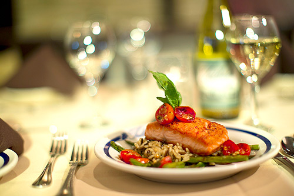

Our Website
Making way for a hearty meal is Arya Restaurant in Jalgaon. Established in the year 1991, this place is synonymous with delicious food that can satiate all food cravings. It is home to some of the most appreciated cuisines which include Pure Vegetarian. The restaurant welcomes guests from 11:00 - 22:30 allowing diners to relish a scrumptious meal between the functional hours.So as to be able to cater to a large number of diners, it occupies a favourable location at Navi Peth Jalgaon. 279,Kelkar Market Tower Chowk,Navi Peth-425001 is where one can visit the venue. Courtesy to this strategic location, foodies in and around the neighborhood can walk in to this eating house conveniently without facing any hassles related to commuting to this part of the city.